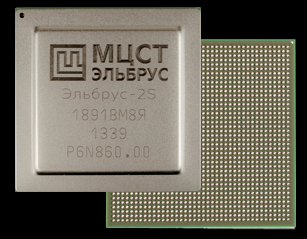
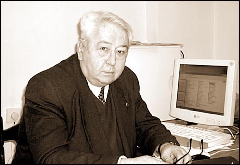
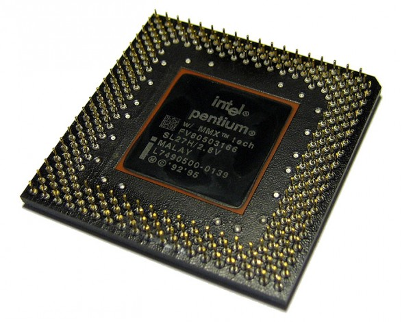
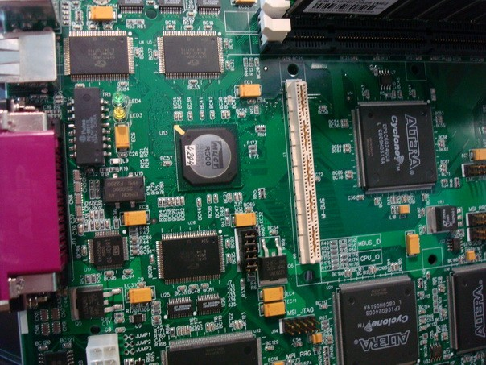
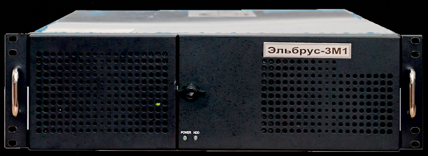
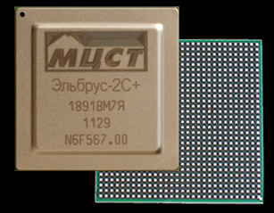
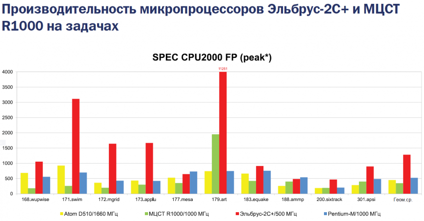
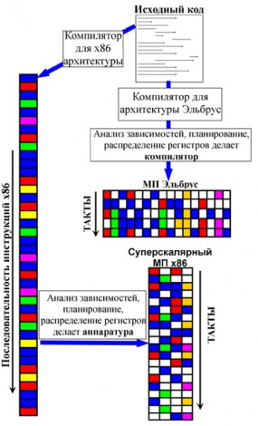
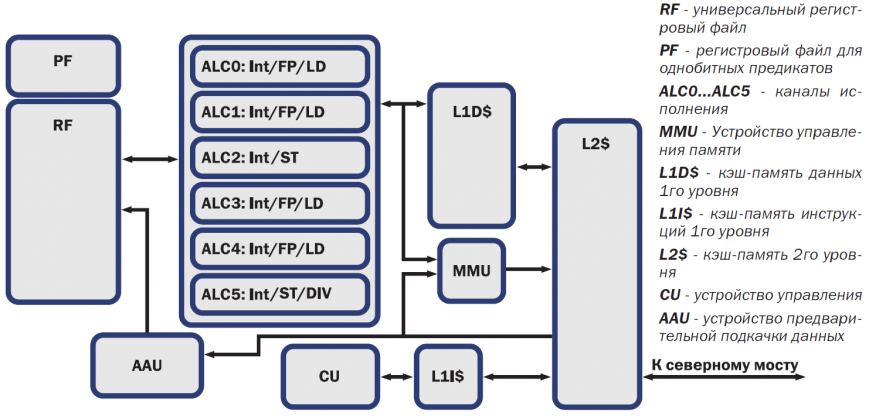

Обзор архитектуры отечественного процессора «Эльбрус-4С»
Готовы поспорить: многие из вас даже не подозревали, что в России тоже разрабатывают и выпускают процессоры. Оно и понятно — отечественная индустрия микроэлектроники уже достаточно долгое время находится в периоде застоя. Однако компания МЦСТ пытается переломить ситуацию с помощью своего нового четырехъядерного процессора «Эльбрус-4С».
Все привыкли к тому, что на рынке микропроцессоров балом правят три крупных американских производителя: Intel, AMD и IBM. Это действительно так! Однако это не означает, что микропроцессоры больше никто не производит. Как правило, в большинстве развитых стран есть собственные «государственные» производители интегральных схем. Не стоит думать, что они пытаются каким-то образом составить конкуренцию «большой тройке» — вовсе нет. Причина локальной разработки и производства процессоров кроется несколько в другом, а именно в необходимости выпуска собственных решений для оборонной отрасли, где использование иностранной электронной базы запрещается из соображений национальной безопасности.
Само собой, ситуация характерна и для России. Главным отечественным решением являются процессоры на базе архитектуры «Эльбрус», разработкой которых занимается компания МЦСТ. В конце апреля был анонсирован скорый выход четырехъядерной модели «Эльбрус-4С», о которой и пойдет речь в сегодняшнем материале.
Однако для начала мы вернемся в прошлое и взглянем, как зарождалась архитектура «Эльбрус».

Процессор «Эльбрус» производства МЦСТ
Трудиться над архитектурой «Эльбрус» начали более 40 лет назад, а именно в 1973 году. Работы велись в стенах «Института точной механики и вычислительной техники имени Лебедева» (ИТМиВТ) под руководством академика Всеволода Сергеевича Бурцева — известного ученого в области систем управления и конструирования универсальных ЭВМ. Конечно же, «заказ» на подобного рода компьютерную технику поступил от военных.

Всеволод Бурцев — человек, стоящий у истоков архитектуры «Эльбрус»
Выпуск первого поколения компьютеров с архитектурой «Эльбрус» состоялся в 1980 году. Их особенностью являлась масштабируемая архитектура: они поддерживали параллельную работу до 10 процессоров одновременно. Объем оперативной памяти составлял 64 Мбайт (или 220 машинных слов), а быстродействие такого компьютера достигало отметки в 12 миллионов операций в секунду.
Однако главной инновацией «Эльбруса» была его суперскалярная архитектура — в компьютерах она применялась впервые. Как выяснилось позднее, на то время компания IBM уже имела некоторые разработки в этой области, однако довести суперскалярную архитектуру до массовых решений по разным причинам они так и не смогли. Поэтому американские производители начали использовать суперскалярную архитектуру лишь в 1990-х годах. Первыми массовыми устройствами с такой архитектурой стали процессоры Intel Pentium.

Процессор Pentium стал первой разработкой Intel, использующей суперскалярную архитектуру
Спустя пять лет после выхода первого поколения процессоров завершилась разработка компьютера «Эльбрус-2». Архитектурно он несильно отличались от «Эльбрус-1», однако в них применялась другая элементная база, что позволило поднять производительность новых процессоров более чем в 10 раз — до 125 млн операций в секунду. Также был увеличен объем оперативной памяти компьютера: с 64 Мбайт до 144 Мбайт, а пропускная способность каналов ввода/вывода составила 120 Мбайт/с.
«Эльбрус-2», как и его предшественник, был предназначен для использования в оборонной отрасли. В итоге компьютер эксплуатировался в Центре управления космическими полетами, а также в ядерных исследовательских центрах в Арзамасе-16 и Челябинске-70. Помимо этого, существовала и другая версия «Эльбрус-2», оптимизированная под более простые задачи. Она носила название «Эльбрус 1-КБ» и пришла на смену устаревающей системе БЭСМ-6, которая к тому времени использовалась уже на протяжении двух десятков лет. Разработчики сохранили программную совместимость между «Эльбрус 1-КБ» и БЭСМ-6, поэтому переход на новые компьютеры оказался вполне безболезненным.
После успешного выпуска «Эльбрус-2» полным ходом шла разработка нового компьютера, который ожидаемо получил название «Эльбрус-3». В третьем поколение устройств планировалось огромное количество архитектурных изменений. Разработчики из ИТМиВТ именовали новую архитектуру «постсуперскалярной». Данный принцип лежал в основе архитектуры будущих процессоров Intel Itanium. Поэтому, как бы это странно ни звучало, но отечественные инженеры вновь в плане внедрения инноваций опережали своих западных коллег.
Однако дальше проектирования дело не дошло. В 1994 году был создан тестовый образец процессора «Эльбрус-3», но серийное производство так и не было налажено по достаточно глупой причине: устройство оказалось совсем не востребованным. Спустя 6 лет уже инженеры компании МЦСТ пытались воплотить в жизнь идеи «Эльбрус-3» в новом процессоре «Эльбрус-2000» (также известного как Е2К), который теоретически мог стать конкурентом анонсированному процессору Intel Itanium. Однако массовое производство «Эльбруса-2000» требовали значительных финансовых вливаний, а найти инвестора разработчикам так и не удалось.
Стоит сделать небольшое отступление и сказать пару слов о МЦСТ, которая со времен «Эльбрус-3» и занимается разработкой подобных решений. Компания была основана 2 марта 1992 года как Товарищество с ограниченной ответственностью (ТОО) «Московский центр SPARC-технологий» (МЦSТ). Наличие аббревиатуры SPARC в названии связано с тем, что на тот момент компания МЦСТ рассматривала в качестве основного партнера американскую корпорацию Sun Microsystems, которая продвигала свои вычислительные машины с архитектурой SPARC. И наличие этой аббревиатуры в названии предоставляло ей существенные льготы при сотрудничестве. Например, МЦСТ получила доступ к передовым технологиям проектирования микропроцессорной техники, операционным системам, системам программирования и другим технологиям. На период развития компании это было очень существенной поддержкой. И если поначалу компания работала в тесном сотрудничестве с такими гигантами, как Sun Microsystems, Avanti, Compass, Synopsys, то вскоре инженеры МЦСТ, набравшись опыта, полностью переключились на разработку устройств по государственным заказам.

Система со SPARC-процессором МЦСТ R500
Вплоть до 2007 года МЦСТ выпускала лишь микропроцессоры с архитектурой SPARC и вычислительные системы на их базе. Собственная архитектура «Эльбрус» отошла на второй план. В период с 1997 по 2007 годы были выпущены четыре SPARC-микропроцессора: МЦСТ-R100, МЦСТ-R150, МЦСТ-R500 и МЦСТ-R500S. Также увидел свет и вычислительный комплекс «Эльбрус-90микро». Несмотря на свое название, к данной архитектуре система не имела никакого отношения.
Лишь в 2005 году возобновилась работа над архитектурой «Эльбрус», основанной на микроархитектуре VLIW (Very Long Instruction Word). А уже в 2007 году был представлен одноименный процессор. Его основные характеристики мы собрали в таблицу, которую вы можете увидеть снизу.
|
Технологический процесс |
0,13 мкм |
|
Рабочая тактовая частота |
300 МГц |
|
Пиковая производительность |
64 разряда, GIPS/GFLOPS — 6,67/2,4 32 разряда, GIPS/GFLOPS — 9,5/4,8 16-8 GIPS — 12,2–22,6 |
|
Кэш-память команд 1-го уровня |
64 Кбайт |
|
Кэш-память данных 1-го уровня |
64 Кбайт |
|
Кэш-память 2-го уровня |
256 Кбайт |
|
Пропускная способность шин связи с кэш памятью |
9,6 Гбайт/с |
|
Пропускная способность шин связи с оперативной памятью |
4,8 Гбайт/с |
|
Размеры кристалла |
15,0х12,6 |
|
Количество транзисторов |
75,8 млн |
|
Рассеиваемая мощность |
6 Вт |
Конечно, для 2007 года характеристики чипа были более чем скромные — он ни в коем случае не составлял конкуренции современным процессорам, например, поколению Intel Conroe, представленному в 2006 году. «Эльбрус» уступал им по всем параметрам. Процессор выпускался по устаревшим 130-нм технологическим нормам, тогда как Intel и AMD уже освоили 65-нм техпроцесс. Как ни странно, но производство процессора было доверено тайваньской компании TSMC. Странно потому, что «камень» предназначался для использования в «оборонке», а производство на сторонних мощностях, таким образом, напрямую влияло на безопасность системы из-за возможных «закладок».
Что касается скорости работы «Эльбруса», то его пиковая производительность в 64-разрядном режиме составляла 2,4 ГФЛОПС. Для сравнения: пиковая производительность бюджетного двухъядерного процессора Intel Core 2 Duo E4300 с актуальной на то время архитектурой Conroe и тактовой частотой 1,8 ГГц составляла 14,4 ГФЛОПС, то есть в 6 раз больше! Поэтому вы можете представить, насколько медленным был «Эльбрус» для 2007 года. Тем не менее, для оборонной отрасли производительности процессора было вполне достаточно, поэтому на его основе была создана вычислительная система «Эльбрус-3М1».

Вычислительный комплекс «Эльбрус-3М1»
Комплекс «Эльбрус-3М1» поставлялся с защищенной операционной системой МСВС-Э (Мобильная система Вооруженных Сил), в основе которой лежит Linux версии 2.6.14. Кроме этого компьютер оснащался пакетом тестовых и диагностических программ, а также был обратно совместим со старыми вычислительными комплексами «Эльбрус-1» и «Эльбрус-2». По уровню производительности «Эльбрус-3М1» был сопоставим с системой на базе Pentium III с тактовой частотой 500 МГц. Было проведено сравнительное тестирование в режиме совместимости с платформой x86, и «Эльбрус-3М1» превзошел в скорости процессор Intel. Помимо этого, проводилось тестирование и в «родной» платформе для системы МЦСТ. В таком режиме производительность «Эльбрус-3М1» находилась на уровне с конфигурацией на базе процессора Intel Pentium 4 с частотой 2000 МГц. Для оборонной отрасли такого уровня производительности было более чем достаточно.
Следующим этапом развития архитектуры стала система на кристалле «Эльбрус-S», выпущенная в 2010 году. Для удобства сравнения мы свели все основные характеристики процессора в следующую таблицу.
|
Технологический процесс |
0,09 мкм |
|
Рабочая тактовая частота |
500 МГц |
|
Пиковая производительность |
64 разряда, GFLOPS — 4 32 разряда, GFLOPS — 8 |
|
Кэш-память команд 1-го уровня |
64 Кбайт |
|
Кэш-память данных 1-го уровня |
64 Кбайт |
|
Кэш-память 2-го уровня |
2 Мбайт |
|
Пропускная способность шин связи с кэш памятью |
16 Гбайт/с |
|
Пропускная способность шин связи с оперативной памятью |
8 Гбайт/с |
|
Площадь кристалла |
142 мм2 |
|
Количество транзисторов |
218 млн |
|
Рассеиваемая мощность |
13 Вт — типовая, 20 Вт — максимальная |
Характеристики нового процессора были улучшены в сравнении с «Эльбрусом». Прежде всего стоит отметить, что производство «Эльбрус-S» было переведено на 90-нм технологические «рельсы». Пускай в 2010 году Intel и AMD уже производили процессоры по тонкому 32-нм техпроцессу, но для отечественного устройства этот переход стал значительным шагом вперед. Тактовая частота «Эльбрус-S» составляла 500 МГц, что на 200 МГц выше, чем у «Эльбруса». Выросла и пиковая производительность: до 4 и 8 ГФЛОПС в 64-разрядном и 32-разрядном режимах соответственно. Увеличился и объем кэш-памяти второго уровня — до 2 Мбайт. Да и сам чип стал сложнее: количество транзисторов в сравнении с предшественником выросло почти в три раза.
В придачу к «Эльбрус-S» МЦСТ представила контроллер периферийных устройств (КПИ) — он же «южный мост». Хаб обеспечил поддержку как «гражданских» интерфейсов, так и промышленных. Благодаря КПИ стало возможным созданием специального четырехпроцессорного рабочего модуля МВ3S/C, который используется в военной технике.
|
Технологический процесс, нм |
130 |
|
Тактовая частота, МГц |
250 |
|
Последовательная шина связи с процессором, пропускная способность, Гбайт/с |
2 |
|
Контроллер PCI-Express версии 1.0a |
8 линий |
|
Контроллер PCI версии 2.3 |
32/64 бита, частота 33/66 МГц |
|
Контроллер Ethernet 1 Гбит/с |
1 порт |
|
Контроллер SATA 2.0 |
4 порта |
|
Контроллер IDE |
PATA-100, 2 порта по 2 устройства |
|
Контроллер USB 2.0 |
2 порта |
|
Контроллер звукового интерфейса AC-97 |
2-канальное стерео |
|
Контроллер последовательного интерфейса RS-232/485 |
2 порта |
|
Контроллер параллельного интерфейса IEEE-1284 с поддержкой DMA |
1 порт |
|
Контроллер программируемых универсальных входов-выходов GPIO |
16 сигналов |
|
Интерфейс I2C |
4 канала |
|
Число транзисторов, млн |
30 |
|
Потребляемая мощность, Вт |
6 |
Спустя год было налажено производство следующего поколения процессоров под названием «Эльбрус-2С+». В своих пресс-релизах компания МЦСТ указывала шестиядерную архитектуру. Однако это совсем не так! «Эльбрус-2С+», по сути, является двухъядерной моделью. Он обладает двумя модулями архитектуры «Эльбрус», но также имеет и четыре ядра цифровых сигнальных процессоров (DSP) фирмы «Элвис». Помимо этого, кристалл претерпел множество изменений. Так, объем кэш-памяти второго уровня каждого из ядер составляет 1 Мбайт. Была добавлена поддержка памяти DDR2 с эффективной частотой 800 МГц, а также дополнительный канал ввода/вывода, посредством которого можно подключить еще один КПИ.

Двухъядерный процессор «Эльбрус-2С+»
Для процессора была реализована версия компилятора языка C, которая позволяет генерировать код для ядер DSP и обеспечивать эффективное взаимодействие основной программы, исполняющейся на ядрах CPU, а также процедур, исполняющихся на DSP. Забегая чуть вперед, скажем, что программировать под ядра DSP было сравнительно трудно, поэтому в следующем поколении процессоров инженеры МЦСТ от них отказались вовсе. В результате внесенных изменений производительность процессоров значительно возросла и уже составляла 28 ГФЛОПС в 32-разрядном режиме. Если сравнивать быстродействие «Эльбрус-2С+» с процессорами Intel, то отечественная разработка окажется чуть выше по скорости, чем решения Intel Core 2 Duo.
|
Технологический процесс |
0,09 мкм |
|
Рабочая тактовая частота |
500 МГц |
|
Число ядер архитектуры Эльбрус Число ядер DSP (Elcore-09) |
2 4 |
|
Пиковая производительность (ядра CPU + ядра DSP) |
64 разряда, GFLOPS – 8+0 32 разряда, GFLOPS – 16+12 |
|
Кэш-память команд 1-го уровня |
64 Кбайт |
|
Кэш-память данных 1-го уровня |
64 Кбайт |
|
Кэш-память 2-го уровня |
1 Мбайт |
|
Встроенная память DSP (на ядро DSP) |
128 Кбайт |
|
Пропускная способность шин связи с кэш памятью |
16 Гбайт/с |
|
Пропускная способность шин связи с оперативной памятью |
12,8 Гбайт/с |
|
Площадь кристалла |
289 мм2 |
|
Количество транзисторов |
368 млн |
|
Рассеиваемая мощность |
25 Вт |
Производительность процессора можно примерно оценить по следующим диаграммам.

Результаты тестирования в пакете SPEC2000 FP
Результаты тестирования в пакете SPEC2000 Int
Помимо «Эльбрус-2С+», в тестировании участвовали процессоры Intel Pentium-M ULV (1 ГГц, кэш-память 1 Мбайт, 2х DDR-266) и Intel Atom D510 (1,66 ГГц, кэш-память 1 Мбайт, DDR2-800), а также еще один процессор компании МЦСТ — R1000. В качестве тестового программного обеспечения был выбран пакет SPEC2000. Как видно из диаграмм, в режиме FP производительность «Эльбрус-2С+» находится на заметно более высоком уровне, нежели у конкурентов. В режиме Int ситуация выравнивается, и зачастую производительность всех процессоров находится на одном уровне, хотя местами отечественные решения откровенно «проседают».
Процессоры «Эльбрус-2С+» предполагалось использовать в системах цифровой интеллектуальной обработки сигнала, таких как радары и анализаторы изображений. Однако в то же время новые чипы были более приспособлены для гражданских задач. Например, компания Kraftway даже выпустила тестовую партию моноблочных компьютеров на базе кристаллов «Эльбрус-2С+», однако дальше этого дело не пошло.
И вот в апреле 2014 года компания МЦСТ представила свою следующую разработку — четырехъядерные процессоры «Эльбрус-4С».
Архитектура процессоров «Эльбрус-4С»
Прежде чем мы начнем подробное изучение архитектуры новых процессоров «Эльбрус-4С», необходимо уделить немного внимания современной архитектуре в целом. Как вам известно, все интегральные решения можно разделить на две большие группы: CISC (Complex Instruction Set Computer) и RISC (Reduced Instruction Set Computer). Уже из названий становится понятно, что CISC-процессоры работают со сложными инструкциями, а RISC — с упрощенными. Сложность инструкций для первой категории заключается в том, что их длина не ограничена. Вдобавок к этому они могут содержать сразу несколько арифметических действий. До начала 1980-х абсолютно все процессоры имели CISC-архитектуру, однако тогдашние исследования компании IBM показали, что сложные инструкции далеко не всегда обрабатываются быстрее, чем последовательность элементарных операций, соответствующая такой сложной инструкции. Так появилась архитектура RISC, предусматривающая использование упрощенных команд.
Примером CISC-архитектуры могут считаться все x86-совместимые процессоры, однако это не совсем так. Работа таких решений базируется на ядре типа RISC. Каждый x86-процессор имеет специальный блок декодирования инструкций, который преобразует CISC-команды в RISC-инструкции.
При этом процессоры x86 являются суперскалярными. Это означает, что за один такт процессор может обрабатывать сразу несколько инструкций. В далеком прошлом процессоры не обладали суперскалярностью и исполняли за такт лишь одну операцию. Тогда это не создавало проблем. Но со временем от CPU требовалась всё более высокая производительность, да и технологические возможности позволяли создавать более сложные системы. Поэтому суперскалярность стала неотъемлемой частью процессорных архитектур. Главной проблемой суперскалярности считается то, что нельзя так просто исполнять несколько операций параллельно, поскольку между ними могут существовать зависимости. Для наглядности тут можно провести параллель с программированием: нельзя запустить на исполнение сразу две функции, если одна из них использует результирующее значение другой. Поэтому в суперскалярных процессорах есть специальная аппаратура, которая анализирует зависимости между операциями и принимает решение об очередности их исполнения.

Принцип работы архитектуры «Эльбрус»
Что касается процессоров «Эльбрус», то они базируются на архитектуре VLIW. По большому счету VLIW является развитием RISC-архитектуры и суперскалярности. Особенностью VLIW является то, что в каждой команде может содержаться до 23 элементарных операций, которые должны исполняться параллельно. При этом задача распараллеливания возлагается на компилятор, в отличие от традиционных суперскалярных архитектур, где за распараллеливание отвечают аппаратные блоки процессора. Эффективность такого метода действительно выше. Компилятор способен анализировать исходный код гораздо тщательнее, чем аппаратура RISC/CISC-процессора, и находить больше независимых операций. Поэтому в архитектуре «Эльбрус» больше параллельно работающих исполнительных устройств, чем в традиционных решениях. На многих алгоритмах она демонстрирует более высокую скорость. Кроме этого, не будем забывать, что в случае использования компилятора для распараллеливания операций отпадает надобность в специальных аппаратных блоках процессора, а это делает устройство кристалла более простым и надежным.

Принцип работы процессора «Эльбрус»
Среди других особенностей архитектуры «Эльбрус» инженеры МЦСТ выделяют следующие:
Конечно, не забыли разработчики и о режиме x86-совместимости. Для этого в архитектуре была реализована система динамической трансляции двоичных кодов x86 в коды процессора «Эльбрус». Если говорить простым языком, то система трансляции создает виртуальную машину, в которой работает гостевая операционная система для этой разрядности. По словам разработчиков, на платформе «Эльбрус» в режиме эмуляции платформы x86 удалось запустить более 20 операционных систем (в том числе несколько версий Windows) и сотни приложений.
Стоит сказать несколько слов о производительности процессора в режиме эмуляции. Она ожидаемо немного снижается (примерно на 20-30%). При этом становятся недоступны некоторые возможности «Эльбрус-4С».
В «Эльбрус-4С» реализован режим x86-совместимости
Несмотря на то, что новые «Эльбрус» также предназначаются и для использования в обычных домашних компьютерах, их главной сферой применения все еще является военная отрасль и промышленные компьютеры. Поэтому, как и прежде, инженеры МЦСТ уделили особое внимание вопросу безопасности новых кристаллов. Одной из самых известных уязвимостей является переполнение буфера, которое возникает, когда процессор записывает данные за пределами выделенного в памяти пространства. Это позволяет злоумышленникам запускать на компьютере произвольный программный код. AMD и Intel уже давно борются с проблемой посредством своих технологий No eXecute Bit и Execute Disable Bit, но их эффективность не так высока, как хотелось бы.
Разработчики МЦСТ в целях повышения безопасности пошли иным путем. Процессоры «Эльбрус-4С» поддерживают так называемое защищенное исполнение программ. Его суть заключается в том, чтобы гарантировать работу приложения только с инициализированными данными, проверять все обращения в память на принадлежность к допустимому диапазону адресов, обеспечивать межмодульную защиту (например, защищать вызывающее ПО от ошибки в библиотеке). Эти проверки осуществляются аппаратно.
Тут же стоит отметить и другую интересную функцию безопасности новых процессоров. В кристаллах «Эльбрус-4С» стек связующей информации (цепочка адресов возврата при процедурных вызовах) отделен от стека пользовательских данных и недоступен для таких вирусных атак, как подмена адреса возврата. При этом разработчики подчеркивают, что на сегодняшний день вирусов для платформы «Эльбрус» попросту не существует.
Технические характеристики «Эльбрус-4С»
В сравнении со своим предшественником процессор «Эльбрус-4С» сделал значительный шаг вперед. Помимо увеличения количества ядер до четырех, он получил множество других улучшений.
|
Технологический процесс |
65 нм |
|
Рабочая тактовая частота |
800 МГц |
|
Число ядер архитектуры Эльбрус |
4 |
|
Пиковая производительность |
64 разряда, GFLOPS – 25 32 разряда, GFLOPS – 50 |
|
Кэш-память команд 1-го уровня |
128 Кбайт |
|
Кэш-память данных 1-го уровня |
64 Кбайт |
|
Кэш-память 2-го уровня |
8 Мбайт |
|
Организация оперативной памяти |
До 3 каналов DDR3-1600 ECC |
|
Пропускная способность каналов оперативной памяти |
38,4 Гбайт/с |
|
Каналы межпроцессорного обмена |
3, дуплексные |
|
Пропускная способность каждого канала межпроцессорного обмена |
12 Гбайт/с |
|
Площадь кристалла |
380 мм2 |
|
Количество транзисторов |
986 млн |
|
Рассеиваемая мощность |
До 60 Вт |
Прежде всего нужно отметить, что производство процессора было переведено на 65-нм техпроцесс. Тактовая частота CPU возросла до 800 МГц. Удвоился объем кэш-памяти команд первого уровня, теперь он составляет 128 Кбайт. А объем кэш-памяти второго уровня составляет 8 Мбайт (против 1 Мбайт у «Эльбрус-2С+»). Также значительно выросла пропускная способность каналов оперативной памяти. Эти изменения позволили добиться внушительной прибавки производительности новых процессоров. Так, в 64-разрядном режиме пиковая производительность составляет 25 ГФЛОПС, что более чем в три раза выше, чем показатель «Эльбрус-2С+». В 32-разрядном режиме производительность достигла отметки 50 ГФЛОПС. Вместе с тем возросла и сложность кристалла. «Эльбрус-4С» содержит 986 млн транзисторов, а его полезная площадь составляет 380 мм2.
Ближайшее будущее процессоров «Эльбрус»
Компания МЦСТ ни в коем случае не планирует снижать темпы разработки и выпуска новых решений. На 2015 год уже запланирован анонс восьмиядерного 28-нм процессора «Эльбрус-8С». Кристалл оснастят 4 Мбайт кэш-памяти второго уровня и 16 Мбайт кэш-памяти третьего уровня, а его тактовая частота составит 1300 МГц. При этом пиковая производительность достигнет отметки 250 ГФЛОПС. Планируется, что «Эльбрус-8С» будет работать в связке с контроллером периферийных устройств второго поколения (КПИ-2), который будет отличаться увеличенной до 16 Гбайт/с пропускной способностью.
Однако 8-ядерный чип является не единственным находящимся в разработке процессором МЦСТ. Компания также «допиливает» экономичный «одноголовый» чип «Эльбрус-1С+», предназначенный для использования в ноутбуках, терминалах и промышленной автоматике. Его отличительной особенностью является наличие встроенного видеоядра с поддержкой аппаратного ускорения 3D-видео. Процессор будет выпускаться в соответствии с 40-нм технологическими нормами. Производительность ядра составит около 24 ГФЛОПС, а встроенного видео — около 28 ГФЛОПС. «Эльбрус-1С+» также будет совместим с новым «южным мостом» КПИ-2, а его энергопотребление составит не более 10 Вт. Выпуск этого процессора также запланирован на 2015 год.
Подробное изучение архитектуры процессора «Эльбрус-4С» оставило после себя двоякое впечатление. С одной стороны, не будем лукавить, по многим параметрам она является устаревшей и значительно отстает от продукции AMD и Intel. С другой стороны, отечественная электроника уже давно находится в периоде застоя, поэтому было бы глупо ожидать, что в такой ситуации процессоры МЦСТ смогут составить хоть какую-то конкуренцию западным разработкам. И здесь главное понимать, что предпринимаются реальные попытки возродить отечественную индустрию электроники. В такой ситуации выпуск «Эльбрус-4С» — очень большой шаг вперед. Тем более, что в архитектуре реализовано несколько очень интересных технологий, а со своими задачами в оборонной отрасли он справляется более чем уверенно.
У компании МЦСТ большие планы на будущее. Это и выпуск процессоров «Эльбрус-8С», и «Эльбрус-1С+». Так что следующий год во многом покажет, насколько конкурентоспособной окажется российская отрасль микроэлектроники.